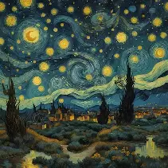

<section>
  <h2>Áudio</h2>
  <audio controls>
    <source src="musica (1)" type="audio/mpeg">
    <source src="musica.ogg" type="audio/ogg">
    Seu navegador não suporta o elemento de áudio.
  </audio>
  <br><br>
  <a href="musica (1)" download>Baixar áudio</a>
</section>

<audio controls>
  <source src="musica.mp3" type="audio/mpeg">
  <source src="musica.ogg" type="audio/ogg">
  Seu navegador não suporta o elemento de áudio.
</audio>
<br><br>
<a href="musica.mp3" download>Baixar áudio</a>

<section>
  <h2>Vídeo do YouTube</h2>
  <iframe src="https://www.youtube.com/embed/7I_u_McAs_Q"
  title="YouTube video player"
  allow="accelerometer; autoplay; clipboard-write; encrypted-media; gyroscope; picture-in-picture"
  allowfullscreen></iframe>
  <br>
  <a href="https://youtu.be/7I_u_McAs_Q" target="_blank">Assistir no YouTube</a>
</section>

<section>
  <h2>Galeria de Imagens</h2>
  <div class="galeria">
    <figure>
      
      <figcaption>Paisagem ao pôr do sol</figcaption>
    </figure>

    <figure>
      
      <figcaption>Flores coloridas</figcaption>
    </figure>

    <figure>
      
      <figcaption>Noite estrelada</figcaption>
    </figure>
  </div>
</section>

<!-- Footer -->
<footer style="
  text-align: center; 
  padding: 20px; 
  background-color: #000000; 
  color: #ff69b4; 
  font-family: Arial, sans-serif;
  font-weight: bold;
  letter-spacing: 0.5px;
  margin-top: 40px;
  border-top: 3px solid #ff69b4;
">
  <p>&copy; 2025 Todos os direitos reservados a <strong>Jhenifer Paulino Costa</strong>.</p>
</footer>

</body>
</html>
